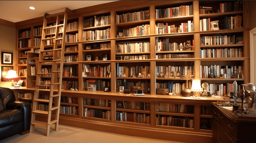

Mengenal Pojok Baca Digital
Membawa semangat literasi dari jantung ibu kota ke ujung jari Anda.
Pojok Baca Digital (POCADI) adalah inovasi layanan perpustakaan yang dirancang untuk memberikan akses bacaan berkualitas secara gratis kepada masyarakat luas melalui platform digital.
Berlokasi strategis di area publik, kami hadir untuk memastikan bahwa pengetahuan dapat diakses oleh siapa saja, kapan saja, tanpa batasan fisik rak buku tradisional.
Misi Kami:
- Meningkatkan minat baca masyarakat di era digital.
- Menyediakan koleksi e-book yang relevan dan edukatif.
- Membangun ekosistem literasi yang modern dan inklusif.
